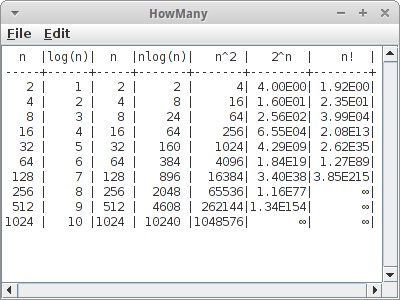

Algorithmic Analysis
Wir haben jetzt schon einige Algorithmen gesehen, und u.a. festgestellt, dass es sehr häufig mehr als einen Algorithmus gibt um ein gegebenes Problem zu lösen. Die Frage stellt sich, welchen soll ich denn verwenden? In diesem Kapitel beschäftigen wir uns damit welcher denn der schnellste ist, und wie man das vorhersagt oder misst. Geschwindigkeit ist aber nicht das einzige Kriterium das für die Wahl entscheidend sein kann: manchmal ist es Speicherplatz, manchmal ist es Zuverlässigkeit, und manchmal Einfachheit. Aber in aller Regel hilft es einem wenig, wenn eine Algorithmus Jahre braucht bis er fertig ist, deswegen ist das häufigste Optimierungskriterium die Zeit. Außerdem stellen wir auf den folgenden Seiten auch ein paar neue Techniken vor: Approximation, Dynamische Programmierung und Divide and Conquer.
.
Approximation
Als wir Leute in einem Stadium zählen wollten, haben wir das erste Mal gesehen, dass es u.U. genügt nur ungefähr zu wissen wieviel Leute es sind. Also eine grobe Abschätzung oder eine Annäherung an den genauen Wert. Das ist eine Technik die nicht selten verwendet wird, vor allem wenn es schnell gehen muss.
Wenn wir die Fakultät einer Zahl berechnen wollen, also n!, dann haben wir im letzte Kapitel schon zwei Methoden gesehen, und zwar Iteration und Rekursion. Eine dritte ist Approximation. In der Regel muss man da einen Mathematiker als Kumpel haben, die kennen sich mit so Sachen nämlich gut aus. Für die Fakultät gibt es nämlich eine Formel die sehr gute Näherungswerte für große Fakultäten liefert die sogenannte Stirling-Formel [1]:
Wobei man bei den Mathematikern immer aufpassen muss: was heisst denn groß? Manchmal bedeutet das riesengroß, also total nutzlos eigentlich. Aber hier heisst groß so ab drei, und das ist eigentlich gar nicht so groß. Deswegen ist das eine Superformel um Fakultäten auszurechnen (genauer anzunähern) sobald n größer als drei ist.
.
Dynamic Programming
Kommen wir zur Technik der Dynamischen Programmierung [2,3]. Der Name ist wohl der dümmste der einem einfallen kann, denn die Technik ist eigentlich nicht besonders dynamisch, noch hat sie irgendetwas mit Programmierung zu tun. Wenn man unbedingt will, dann wäre dynamische Nachschlagetabelle, also dynamic lookup table, schon beschreibender.
Worum geht es? Wenn wir die Fakultät von 11 berechnen wollen, dann brauchen wir ja die Fakultät von 10 erstmal, weil ja
11! = 11 * 10!
So was wäre wenn wir irgendwann schon mal 10! ausgerechnet hätten und uns das gemerkt hätten? Das ist Dynamischen Programmierung: einfach merken was man schon mal ausgerechnet hat. Oder genauer, das wiederverwenden was man schon mal ausgerechnet hat.
Schauen wir uns mal an wie man das in Java macht. Das "Merken" machen wir in einem Array:
public long[] factorialLookupTable;
Dann berechnen wir einfach mal die ersten zwanzig Fakultäten im Voraus:
public void initFactorialLookupTable() {
factorialLookupTable = new long[20+1];
for (int i = 1; i < factorialLookupTable.length; i++) {
factorialLookupTable[i] = factorialIterative(i);
}
}
Wenn uns jetzt irgendjemand nach einer Fakultät fragt, schauen wir einfach in unserem Array nach:
public long factorialLookupTable(int n) {
return factorialLookupTable[n];
}
und das geht super-schnell. Technisch gesehen schummeln wir hier ein bischen, weil wir die ganzen Werte im Voraus berechnen. Aber das Kernprinzip der Dynamischen Programmierung ist es das wieder zu verwenden was wir schon ausgerechnet haben.
.
Fastest
Wir haben ja schon angedeutet, dass es in diesem Kapitel um Geschwindigkeit geht und wie man sie misst. Wir haben inzwischen schon vier verschiedene Algorithmen um die Fakultät einer Zahl zu berechnen:
- Iteration
- Rekursion
- Dynamischen Programmierung
- Abschätzung
Welcher ist nun der schnellste? Zeitmessungen in Java machen wir mit der System.currentTimeMillis() Methode, die gibt uns die Zeit die seit dem 01.01.1970 vergangen ist in Millisekunden. Wir nehmen also die Zeit bevor wir mit unserer Berechnung beginnen und ziehen dann die Zeit danach davon ab:
long start = System.currentTimeMillis(); for (int i = 0; i < NR_OF_ITERATIONS; i++) { x = Factorial.factorialIterative(20); } long duration = System.currentTimeMillis() - start; System.out.println("time iterative: " + duration);
Wenn eine Berechnung sehr kurz ist, also im Milli- oder Nanosekunden Bereich, dann sollten wir diese Berechnung mehrmals (so hundertmillionenmal) ausführen, sonst sind die gewonnen Resultate nicht besonders aussagekräftig. Überhaupt kann bei Zeitmessungen recht viel schief gehen.
Und, wer ist der Gewinner?
iteration: 1262ms recursion: 2524ms dynamic programming: 4ms approximation: 6ms
Der Unterschied ist schon ziemlich massiv: Dynamischen Programmierung und Abschätzung schlagen die Iteration und Rekusion um Längen! Analysieren wir die Ergebnisse aber etwas genauer:
- Abschätzung ist zwar schnell aber nicht genau. Man muss schon wissen ob man mit einer Abschätzung leben kann, aber sie ist schnell und braucht wenig Speicher.
- Dynamischen Programmierung ist genau und schnell. Aber auch hier gibt es zu bedenken: einmal muss ich die Nachschlagtabelle ja ausrechnen, und das dauert Zeit. Und die Nachschlagtabelle benötigt Speicher, teilweise sehr viel Speicher.
- Iteration ist zwar nicht so schnell, ist aber sehr effektiv was den Speicher angeht. Und sie ist immer noch doppelt so schnell wie die Rekursion (aber nicht immer).
- Rekursion ist eigentlich so das schlimmste was man machen kann: sie ist langsam und braucht viel Speicher. Sehr häufig sind rekursive Lösungen aber sehr elegant, und bekanntlich ist Eleganz ja teuer. Man fragt sich natürlich warum wir uns dann das ganze letzte Kapitel damit rumgeschlagen haben... die Antwort kommt gleich.
Zusammenfassend kann man allerdings sagen, wenn ein Algorithmus schnell ist, dann geht er meist nicht sehr effektiv mit Speicher um, und umgekehrt.
.
Divide and Conquer
Ist Rekursion immer am langsamsten? Meistens ja, aber es gibt Ausnahmen. Schauen wir uns mal das Berechnen von Potenzen an. Nehmen wir an wir wollen zwei hoch acht berechnen:
2^8 = 2*2*2*2*2*2*2*2 = 256
Eine Möglichkeit ist mittels Iteration:
int powerIt(int x, int n) {
int power = 1;
for (int i = 0; i < n; i++) {
power *= x;
}
return power;
}
Eine zweite ist mittels Rekursion. Erinnern wir uns, dass
2^8 = 2 * 2^7
dann sehen wir hier sofort eine rekursive Beziehung. Mit dem base case dass 20 = 1, können wir das folgendermaßen in Java umsetzen:
int powerRe(int x, int n) {
if (n == 0)
return 1;
else
return x * powerRe(x, n-1);
}
Interessanterweise ist das aber nicht die einzige rekursive Lösung. Es gibt nämlich noch eine andere:
2^8 = 2^4 * 2^4
Das sieht jetzt ganz unscheinbar aus, ist es aber nicht. Es ist das erste Mal dass wir einem Algorithmus aus der Kategorie divide and conquer begegnen. Die haben's in sich. Zunächst setzen wir das in Java um:
int powerDC(int x, int n) {
if (n == 0)
return 1;
else {
int temp = powerDC(x, n/2);
if (n % 2 == 0)
return temp * temp;
else
return x * temp * temp;
}
}
Jetzt stellt sich natürlich wieder die Frage, welcher ist denn der schnellste? Wir lassen unsere Stoppuhren laufen und stellen fest:
iteration: 6ms recursion: 778ms divide & conquer: 89ms approximation: 3ms
Wie erwartet, ist die Approximation die schnellste. Iteration ist auch verflucht schnell, aber die Überraschung kommt wenn wir Rekusion mit Divide and Conquer vergleichen: Divide and Conquer ist fast zehnmal schneller! Es kommt sogar noch besser: je größer die Zahlen werden, desto besser wird Divide and Conquer, am Ende schlägt er sogar die Iteration. Wie wir in späteren Kapiteln noch sehen werden, Divide and Conquer ist unser Freund.
.
Algorithm Analysis
Wie bewertet man denn einen Algorithmus? Bisher haben wir einfach die Stoppuhr ausgepackt und gemessen. Das funktioniert, aber es ist nicht sehr wissenschaftlich, und wir wissen eigentlich auch nicht warum ein Algorithmus besser ist als ein anderer. Darum geht es in der algorithmischen Analyse, man versucht Algorithmen mathematisch zu untersuchen, zu bewerten und einzuordnen. Da wir keine ausgebildeten Mathematiker sind, werden wir das ganze etwas vereinfachen: im Prinzip was wir im Folgenden machen ist nichts anderes als zählen.
Constant Performance: O(1)
Wir beginnen ganz einfach, wir nutzen die Tatsache, dass die meisten modernen CPUs die Potenz einer Zahl direkt berechnen können:
int powerApprox(int x, int n) {
return (int) Math.pow(x, n);
}
Dies dauert eine feste Anzahl von CPU-Zyklen (etwa 28 CPU-Zyklen) und egal, was die Werte von x oder n sind, wird es immer die gleiche Zeit in Anspruch nehmen. Wir nennen dies konstante Performanz, weil sich die Zeit nicht ändert, auch wenn wir x oder n ändern. In Kurzform: O(1).
Linear Performance, Iteration: O(n)
Als nächstes betrachten wir unsere iterative Lösung:
1. int powerIt(int x, int n) {
2. int power = 1;
3. for (int i = 0; i < n; i++) {
4. power *= x;
5. }
6. return power;
7. }
Wir wollen ermitteln, wieviele CPU-Zyklen für diese Berechnung notwendig sind. Bei modernen CPUs dauern die meisten Anweisungen etwa 2 bis 3 Zyklen. Damit kann man dann ausrechnen wie lange es dauert. Deshalb genügt es für uns eigentlich zu wissen wieviele Anweisung für eine gewisse Berechnung nötig sind. Also analysieren wir den Code oben Zeile für Zeile:
- die Werte von x und n müssen wir in den CPU-Registern speichern, das benötigt 2 Anweisungen;
- eine einfache Zuweisung, braucht 1 Anweisung;
-
Schleifen sind etwas knifflig:
- einmal haben wir eine Zuordnung, int i = 0, das ist 1 Anweisung, wird nur einmal ausgeführt;
- dann haben wir einen Vergleich, i < n, auch 1 Anweisung, wird u.U. mehrmal ausgeführt;
- schließlich haben wir noch ein Inkrement, i++, auch 1 Anweisung, wird u.U. mehrmal ausgeführt;
- eine einfache Multiplikation, dauert 1 Anweisung;
- eine geschloßene geschweifte Klammer benötigt natürlich keine Zeit, aber wenn die Schleife mehrmals durchlaufen wird, bedeutet sie, dass wir wieder zurück zur Zeile 3 gehen;
- return heißt soviel wie "schreibe es irgendwo in den Speicher", d.h. 1 Anweisung.
Also, wielange dauert es? Dass hängt von n ab. Je größer n ist, desto länger dauert es. Um genau zu sein
# of instructions = 2+1+1 + n*( 1+1+1) + 1 = 5 + 3*n ~ n
D.h. je größer n wird, desto länger dauert es. Man nennt das auch lineare Performanz, linear in n. Oder in Kurzform: O(n).
Linear Performance, Recursion: O(n)
Auch Rekursion kann lineare Performanz haben. Unsere erste rekursive Lösung war wie folgt:
1. int powerRe(int x, int n) {
2. if (n == 0)
3. return 1;
4. else
5. return x * powerRe(x, n-1);
6. }
Wir analysieren wieder Zeile für Zeile:
- wir müssen x und n in den CPU-Registern speichern, das sind 2 Anweisungen;
- ein einfacher Vergleich, 1 Anweisung;
- return schreibt etwas in den Speicher, d.h. 1 Anweisung;
- else zählt nicht als Anweisung, ist Teil von if, also 0 Anweisungen;
-
das ist jetzt wieder etwas komplizierter, gehen wir von rechts nach links vor:
- wir subtrahieren 1 von n, 1 Anweisung;
- wir rufen uns selbst auf: keine Ahnung wie lange das dauert, also ? Anweisungen
- eine Multiplikation, 1 Anweisung;
- wir geben etwas zurück, das ist 1 Anweisung.
Heiklig ist der rekursive Aufruf. Wie kann man den abschätzen? Um ein Gefühl dafür zu bekommen was passiert, wählen wir einfach mal verschiedene n, beginnend mit n = 0:
- n=0: es gibt gar keinen rekursiven Anruf, wir kommen nur zur Zeile 3, macht insgesamt 4 Anweisungen;
- n=1: hier gibt es einen rekursiven Anruf, der benötigt 4 Anweisungen (d.h. n = 0), womit wir insgesamt bei 2 + 1 +1 + 4 + 1 + 1 = 4 + 6 = 10 Anweisungen wären;
- n=2: hier gibt es einen rekursiven Aufruf zu n = 1, der 9 Anweisungen benötigt, wie wir gerades festgestellt haben, also in Summe 2 + 1 + 1 + 9 + 1 + 1 = 9 + 6 = 15 Anweisungen.
Wie wir sehen, fügen wir mit jedem weiteren Schritt weitere 6 Anweisungen hinzu. Damit können wir die Anzahl der Anweisungen für ein beliebiges n vorhersagen:
# of instructions = 4 + 6*n ~ n
Das sieht fast genauso aus wie bei der Iteration, nur mit einem anderen Faktor. Wieder, je größere n wird, desto länger dauert es. Auch hier haben wir es mit linearer Performanz zu tun. In Kurzform: O(n).
Logarithmic Performance, Divide and Conquer: O(log(n))
Kommen wir zu unserem zweiten rekursiven Ansatz, der Divide and Conquer Lösung:
1. int powerDC(int x, int n) {
2. if (n == 0)
3. return 1;
4. else {
5. int temp = powerDC(x, n/2);
6. return temp * temp;
7. }
8. }
Wir haben eine etwas einfachere Version des Algorithmus ausgewählt, die nur für Potenzen von 2 funktioniert, also n = 1, 2, 4, 8, 16, .... Wir könnten auch die genaue Lösung von vorher nehmen, aber es wäre ein bischen komplizierter. Wir analysieren wieder jede Zeile:
- wir speichern wieder x und n in den Registern der CPU, also 2 Anweisungen;
- ein einfacher Vergleich, 1 Anweisung;
- return speichert in den Speicher, d.h., 1 Anweisung;
- else zählt wieder nicht, 0 Anweisungen;
-
hier wird es wieder etwas komplizierter:
- erst mal dividieren wir durch 2, bei Ganzzahlen ist das ein einfacher Shift, also 1 Anweisung;
- dann rufen wir uns selbst auf: hängt von n ab wie lange das dauert, ? Anweisungen;
- und zu letzt, noch ein Zuweisung, macht 1 Anweisung;
- hier haben wir eine Multiplikation und ein return Statement, sollten 2 Anweisungen sein.
Wie vorher ist auch hier der rekursive Aufruf den wir uns genauer ansehen müssen. Wie oben, nehmen wir einfach mal ein paar verschiedene n, beginnend mit 0:
- n=0: es gibt keinen rekursiven Anruf, wir kommen nur zur Zeile 3, also insgesamt 4 Anweisungen;
- n=1: es gibt einen rekursiven Anruf, der 4 Befehle benötigt (d.h. n=0), in Summe also: 2 + 1 + 1 + 4 + 1 + 2 = 4 + 7 = 11 Anweisungen;
- n=2: es gibt einen rekursiven Aufruf zu n=2, der 11 Befehle benötigt, in Summe also: 2+1+1+11+1+2 = 11 + 7 = 18 Anweisungen;
- n=4: es gibt einen rekursiven Aufruf zu n=4, der 18 Befehle benötigt, in Summe also: 2+1+1+18+1+2 = 18 + 7 = 25 Anweisungen.
Also keine große Sache, oder? Vergleichen wir mal Äpfel mit Birnen, soll heißen, vergleichen wir mal den einfachen rekursiven Ansatz mit der Divide and Conquer Lösung:
| log_2(n) | n | recursion | divide & conquer |
| 0 | 1 | 9 | 11 |
| 1 | 2 | 14 | 18 |
| 2 | 4 | 24 | 25 |
| 3 | 8 | 44 | 32 |
| 4 | 16 | 84 | 39 |
| 5 | 32 | 164 | 46 |
| 6 | 64 | 324 | 53 |
Solange n klein ist, ist kaum ein Unterschied festzustellen. Aber sobald n ein bischen größer wird, z.B. 64, dann beginnt man einen Unterschied festzustellen. Und je größer n wird, desto größer wird auch der Unterschied. Wir können ganz einfach sehen, dass für den Divide and Conquer Algorithmus die Anzahl der Anweisungen gegeben ist durch
# of instructions = 11 + 7* Log_2( n )
Dabei ist log_2() der Logarithmus zu Basis zwei. Dies ist das erste Mal, dass wir einem Algorithmus begegnen der logarithmisch in seiner Performanz ist, in Kurzform: O(log(n)). Logarithmisch ist gut, weil es schnell bedeutet!
.
Comparing Algorithms and Big-O Notation
Für die vier Algorithmen die wir bisher genauer analysiert haben, haben wir folgendes herausgefunden:
| # of instructions | Big-O | |
| powerApprox() | 28 | O( 1 ) |
| powerIt() | 5 + 3 * n | O( n ) |
| powerRe() | 4 + 5 * n | O( n ) |
| powerDC() | 4 + 7 * log( n ) | O( log(n) ) |
Wenn die n sehr groß werden, dann spielen konstante Faktoren eigentlich nur eine sehr geringe Rolle, weswegen wir sie vernachlässigen. Wir benutzen dann etwas, das wir als Big-O Notation bezeichnen: uns interessiert nur wie das Laufzeitverhalten, die Performanz, von n abhängt. Noch genauer, uns interessiert eigentlich nur das Verhalten für den schlimmsten Fall, deswegen ignorieren wir alle Faktoren die für große n unwichtig werden:
Time = 2 * n + 4 -> O(n) Time = 4 * n - 1 -> O(n) Time = 1/4 * n² - n -> O(n²) Time = 2n + n² -> O(2n)
Der Grund warum Big-O so nützlich ist, hat damit zu tun, dass es uns erlaubt abzuschätzen wie lange eine Berechnung dauern wird.
Nehmen wir an wir hätten drei Algorithmen, einen der linear ist, O(n), einen der quadratisch ist, O(n²), und einen der exponentiell ist, O(2n). Bei ersten Tests konnten wir messen, dass die Berechnung für n=1 ungefähr 1 Millisekunde gedauet hat. Die Frage ist wie lange wird es wohl dauern für n=100?
- O(n): da der Algorithmus linear ist, wird er proportional zu n sein, d.h. er wird ca. 100 Millisekunden benötigen, das ist eine Zehntelsekunde. Das ist ok.
- O(n²): der Algorithmus ist quadratisch, d.h., wir müssen die n=100 quadrieren, also 10000, d.h. es dauert ca. 10 Sekunden, das ist auch noch o.k.
- O(2n): der Algorithmus ist exponentiell, d.h., wir müssen 2 hoch 100 nehmen, was in etwa 1030 Millisekunden oder 1027 Sekunden sind.
Ist das viel oder wenig? Nun das Alter des Universum ist ungefähr 1017 Sekunden. Wir werden also das Ende der Rechnung nicht mehr erleben.
.
Best-Worst-Average Case
Häufig hängt das Laufzeitverhalten eines Algorthmus von der Eingabe ab. Als Beispiel betrachten wir die Suche in einem Array von Strings:
boolean search(String[] names, String key) {
for (int i=0; i < names.length; i++) {
if (names[i] == key) return true;
}
return false;
}
Wie lange dauert es, wenn der gesuchte String am Anfang, in der Mitte, am Ende oder vielleicht gar nicht im Array ist?
-
Best case:
Wenn der gesuchte String am Anfang ist, dann ist das super-schnell. Ein Vergleich und wir sind fertig.
-
Worst case:
Ist der gesuchte String am Ende oder vielleicht gar nicht im Array, dann dauert das am längsten: wir müssen durch das gesamte Array suchen. Das ist also der schlimmste Fall.
-
Average case:
Der gesuchte String ist irgendwo in der Mitte. Das ist der Durchschnittsfall. Der ist allerdings sehr häufig gar nicht so einfach zu berechnen.
Deswegen interessiert uns eigentlich in der Regel der schlimmste Fall, und das ist was uns die Big-O Notation gibt.
.
Review
In diesem Kapitel haben wir mehrere neue Konzepte kennengelernt, dazu gehören Approximation, Dynamische Programmierung und der Divide and Conquer Ansatz. Im Allgemeinen gilt, dass es sehr häufig mehrere Algorithmen gibt ein bestimmtes Problem zu lösen. Wir haben gesehen, wie man die Performanz eines Algorithmus messen kann, aber auch wie man mittels detailierter Analyse auch die Performanz eines Algorithmus vorhersagen kann. Dabei war aber auch wichtig festzuhalten, dass nicht immer Geschwindigkeit das Kriterium sein muss nach dem man einen bestimmten Algorithmus auswählt.
.
Projekte
In den Projekten wollen wir das jetzt ein bischen durch Beispiele vertiefen. Wir sollten dabei auch ein Gefühl dafür bekommen welches Laufzeitverhalten, O(...), vertretbar ist, und welches für alle praktischen Anwendungen nutzlos ist, weil es einfach zu lange dauert.
.
Minimum, Maximum and Average
Nehmen wir an wir haben ein Array mit den folgenden Ganzzahlen gegeben:
int[] arrOfInts = { 5, 55, 2, 7, 45, 3, 1, 8, 23, 12 };
Wir wollen nun drei Methoden schreiben,
- eine, die das kleinste Element findet,
- eine, die das größte Element findet,
- und eine Methode die den Durchschnitt berechnet.
Dabei wollen wir das Laufzeitverhalten dieser drei Algorithmen bestimmen, entweder über Messungen oder über eine algorithmische Analyse wie wir es oben getan haben.
Die Frage die sich stellt, ist der Algorithmus den wir gefunden haben der einzige oder gibt es auch andere? Und ist er der schnellste? Was wäre denn wenn unser Array sortiert wäre? Könnten wir dann einen anderen Algorithmus finden, und wie wäre sein Laufzeitverhalten?
.
Rabbits
Jeder der schon mal Kaninchen hatte weiß, dass diese eine interessante Eigenschaft haben: sie vermehren sich und zwar rasant. Wir wollen also ein Programm schreiben welches berechnet wie sich unsere Kaninchen-Population über die Monate entwickelt. Wir folgen dazu dem Modell von Fibonacci [6]:
- "Jedes Paar Kaninchen wirft pro Monat ein weiteres Paar Kaninchen.
- Ein neugeborenes Paar bekommt erst im zweiten Lebensmonat Nachwuchs (die Austragungszeit reicht von einem Monat in den nächsten).
- Die Tiere befinden sich in einem abgeschlossenen Raum, sodass kein Tier die Population verlassen und keines von außen hinzukommen kann."
Wenn wir die Simulation richtig schreiben, dann müsste dabei die Fibonacci-Folge, also
1, 1, 2, 3, 5, 8, 13, 21, 34, 55, 89, 144, ...
herauskommen. Interessant ist vielleicht zu beobachten, dass jede Zahl die Summe ihrer zwei Vorgängerzahlen ist.
.
FibonacciGraphics
Die Fibonacci Zahlen kann man sehr schön visualisieren, eine davon ist die Fibonacci-Spirale [6]. Schauen wir uns die Zahlen noch einmal an:
1, 1, 2, 3, 5, 8, 13, 21, 34, 55, 89, 144, ...
Wir wollen daraus ein Kachelmuster aus Quadraten generieren, deren Kantenlängen den Fibonacci Zahlen entspricht. Wir gehen wie folgt vor:
- lege in die Mitte das ersten Quadrat, rechts daneben legen wir das zweite Quadrat;
- dann machen wir eine 90 Grad Drehung gegen den Uhrzeigersinn, und legen dort das nächste Quadrat hin;
- wir wiederholen Schritt 2.
Obwohl der Algorithmus total trivial aussieht, kann man bei der Umsetzung verzweifeln. Man darf sich die Lösung anschauen!
.
Fibonacci
Bisher haben wir nur Fakultät und Potenzen ausführlich behandelt. Ein anderes sehr schönes Beispiel das mit vielen unterschiedlichen Algorithmen gelöst werden kann ist die Berechnung der Fibonacci-Folge.
Iteration
Für den iterativen Algorithmus muss man lediglich wissen, dass jede Zahl die Summe ihrer zwei Vorgängerzahlen ist. Man beginnt dann einfach mit den ersten beiden, die ja bekannt sind, und berechnet dann eine nach der anderen, bis man diejenige hat die gewünscht war.
Recursion
Die rekursive Version ist sehr elegant:
public static long fibonacciRecursive(int n) {
switch (n) {
case 0:
return 0;
case 1:
return 1;
default:
return fibonacciRecursive(n - 1) + fibonacciRecursive(n - 2);
}
}
aber auch ätzend langsam. Sobald n größer als 40 wird ist die rekursive Version nicht zu gebrauchen.
Divide and Conquer
Es gibt auch eine Divide and Conquer Version zur Berechnung der Fibonacci-Folge, die kann man bei Referenz [7] auf Seite 457 finden.
Dynamic Programming
Die Fibonacci-Folge ist eigentlich eine sehr schöne Anwendung um Dynamische Programmierung richtig zu machen. Sie basiert auf der rekursiven Version, aber anstelle immer und immer wieder die gleichen Zahlen auszurechnen, merkt sie sich wenn sie etwas schon mal ausgerechnet hat:
public static long[] fibonacciDynamicProgrammingTable = new long[91 + 1];
private static long fibonacciDynamicProgramming(int n) {
if (n == 0) {
return 0;
} else if (fibonacciDynamicProgrammingTable[n] > 0) {
// we have done this calculation before
return fibonacciDynamicProgrammingTable[n];
} else {
long result = 1;
switch (n) {
case 1:
break;
default:
result = fibonacciDynamicProgramming(n - 1)
+ fibonacciDynamicProgramming(n - 2);
}
// remember for future use, in case we need it again
fibonacciDynamicProgrammingTable[n] = result;
return result;
}
}
Diese Version ist extrem schnell.
Lookup Table
Klar Lookup Tables haben wir schon mal gesehen. Aber in diesem Beispiel sehen wir auch den Unterschied zwischen Lookup Tables und Dynamischer Programmierung: Bei Lookup Tables werden alle Werte vorausberechnet. Bei Dynamischer Programmierung werden nur die Werte berechnet die wirklich benötigt werden.
Approximation
Auch für die Fibonacci Zahlen gibt es eine Näherungsformel [6]:
wobei
die Goldene Zahl ist.
Results
Hier sind meine Resultate:
time iterative: 268ms time divide and conquer: 2418ms time dynamic programming: 3ms time lookup table: 3ms time approximation: 11ms
Interessant ist hier die Dynamische Programmierung: sie ist super-schnell, aber sie hat die Eleganz des rekursiven Algorithmus, macht aber keine unnötigen Berechnungen so wie der Lookup Table Algorithmus, wo ja alles im Voraus berechnet werden muss. (Direkte Rekursion ist nicht dabei, weil sie zu lange dauert, das Buch muss ja irgendwann in den Druck).
.
Exponential vs. Factorial Time
Bisher haben wir uns eigentlich nur mit "schnellen" Algorithmen beschäftigt, also solchen deren Laufzeitverhalten O(n), O(log(n) oder O(1) waren. Jetzt wollen wir uns mal kurz mit Algorithmen beschäftigen, deren Laufzeitverhalten eher schlecht ist. Im nächsten Kapitel sehen wir welche mit O(n²) deswegen beschränken wir uns hier auf die mit exponentiellem Laufzeitverhalten oder noch schlimmer faktoriellem.
Im letzten Kapitel haben wir vier interessante rekursive Algorithmen kennen gelernt:
- Subsets,
- Combinationen,
- Permutationen
- und das Tower of Hanoi Problem.
Die Frage die wir hier beantworten wollen, wie ist ihr Laufzeitverhalten? Es gibt zwei Möglichkeiten das zu tun:
- den Code für verschieden große Inputs ausführen und die Zeit zu messen;
- eine asymptotische Analyse wie oben ausführen, in der man für verschiedene n zählt oder abschätzt wieviele Anweisungen notwendig sein werden.
Viel Spaß!
.
Challenges
.
How Many
Bevor wir mit dieser Übung beginnen, sollten wir uns erst einmal ausrechnen wieviele Sekunden hat ein Tag, hat ein Jahr, macht ein durchschnttliches Menschenleben aus, und wie alt ist das Universum in Sekunden.
In der Übung geht es darum einfach mal die Werte der mathematischen Funktionen
- log(n)
- n
- n * log(n)
- n²
- 2n
- n!
für verschiedene n tabellarisch auszugeben. Dabei wollen wir uns aber auf die folgenden n beschränken: 2, 4, 8, 16, 32, 64, 128, 256, 512 und 1024. Das Ganze machen wir mit einem ConsoleProgram. (log(n) ist hier der Logarithmus zur Basis zwei).
Wenn wir jetzt einfach mal annehmen, dass die Zahlen in der Tabelle proportional zur Anzahl der CPU Zyklen sind, und ein CPU Zyklus typisch im 100 Nanosekunden (10-7 Sekunden) Bereich liegt, können wir abschätzen wielange die entsprechenden Algorithmen benötigen würden um fertig zu werden.
.
FunctionPlot
Vielleicht noch besser als die tabellarische Darstellung ist die graphische. Die meiste Arbeit haben wir in der vorhergehenden Übung schon gemacht, jetzt geht es nur noch darum das in ein GraphicsProgram zu verpacken. Dabei lassen wir die x-Werte von 0.1 bis 40 variieren, berechnen die jeweiligen y-Werte für die verschiedenen Funktionen von oben, und zeichnen dieses. Z.B. die Methode die die lineare Funktion zeichnet, könnte wie folgt aussehen:
private void plotLinear() {
double x0 = 0;
double y0 = SIZE;
for (double x = 0; x < SIZE; x++) {
double x1 = 0 + x * SCALE;
double y = (SIZE - x1 / SCALE);
if (y < 0)
break;
drawLine(x0, y0, x, y, Color.BLUE);
x0 = x;
y0 = y;
}
}
dabei zeichnet die Methode drawLine() einfach eine GLine zwischen zwei Punkten:
private void drawLine(double x0, double y0, double x, double y, Color col) {
GLine line = new GLine(x0, y0, x, y);
line.setColor(col);
add(line);
}
.
Lookup Table
Wenn wir den Sinus einer Zahl berechnen wollen verwenden wir normalerweise die Taylorreihen Entwicklung [4]:
wobei hier x im Bogenmaß ist.
Als erstes wollen wir eine Methode namens sineTaylor(double x) schreiben die den Sinus einer beliebigen Zahl mittels der Taylorreihen Entwicklung berechnet.
Als zweites, benutzen wir die in Java gegebenen Methode Math.sin() zum Vergleich, ob unsere Methode auch taugt.
Als drittes, verwenden wir Lookup-Tables, also Nachschlagetabellen. Dazu schreiben wir eine Methode sineLookup(double x), die eine vorher berechnete Lookup-Table verwendet um den Sinus "zu berechnen". Übrigens, moderne GPUs verwenden genau diesen Ansatz [5].
Jetzt ist die Frage, welcher der drei Ansätze ist der schnellste? Wir können hier auch wieder einfach Zeitmessungen machen, oder wir können eine algorithmische Analyse durchführen. Dieses mal machen wir ein Zeitmessung.
Careful!
Eine kurze Anmerkung: wenn man Performanztests macht, muss man immer sehr vorsichtig sein nicht einer Compiler-Optimierung zum Opfer zu fallen. Der Test könnte erst mal naiv so aussehen:
long start = System.currentTimeMillis();
for (int i = 0; i < NR_OF_ITERATIONS; i++) {
int x = Math.sin(1.2);
}
long duration = System.currentTimeMillis() - start;
System.out.println("time Math.sin(): " + duration);
Ganz kritisch ist dabei was genau in der Schleife steht. Wenn wir das so schreiben wie oben, erkennt der Compiler nämlich dass x eine lokale Variable ist, und dass danach gar nichts mehr mit ihr passiert. D.h. er ist schlau genug zu wissen, dass er x gar nicht ausrechnen muss. Deswegen macht er es auch nicht.
Deswegen rüsten wir auf, und deklarieren x als Instanz- oder Klassenvariable:
x = Math.sin(1.2);
Jetzt kann der Compiler nicht wissen ob wir evtl. x irgendwo anders brauchen, und muss es daher ausrechnen. Aber der Compiler ist immer noch schlauer als wir: er sieht nämlich, dass 1.2 eine Konstante ist. Also warum soll er das denn zig-millionenmal ausrechnen, kommt ja doch immer dasselbe raus. Deswegen müssen wir noch einen drauflegen:
x = Math.sin(Math.random());
Erst jetzt kann man mit den Zeiten die rauskommen etwas anfangen. Und da stellt sich folgendes heraus:
time Math.sin(): 6473ms time sineTaylor(): 3324ms time sineLookup(): 2476ms
Unsere selbstgeschriebe sineTaylor() Methode ist ungefähr doppelt so schnell wie die Java native (unsere ist aber viel ungenauer) und die sineLookup() Methode ist noch mal 30% schneller, allerdings auch ungenauer. Man kann mit ein paar Tricks die Genauigkeit der Lookup Methode aber so erhöhen, dass es sich einfach nicht rentiert Taylor loszuschicken [5].
.
Research
Diesem Kapitel war ziemlich anstrengend, deswegen wollen wir hier nicht ganz so viel forschen.
.
Why is recursion so slow?
Wenn wir unsere algorithmische Analyse z.B. für das Power Problem betrachten, wo wir ja die Iteration mit der Rekursion vergleichen, dann würde man naiv erwarten, dass die Rekursion etwa zweimal langsamer ist als die Iteration. In Wirklichkeit sieht der Unterschied eher wie ein Faktor Tausend aus. Warum ist das? Um der Sache auf die Spur zu kommen, müssen wir uns erkundigen was denn auf der Maschinesprach-Ebene alles passiert wenn eine Methode aufgerufen wird.
.
Fragen
-
Kommt es bei Permutationen auf die Reihenfolge an?
-
Geben Sie ein Beispiel für einen Divide and Conquer Algorithmus.
-
Betrachten Sie den folgenden Code:
boolean search(List<String> names, String key) { for (int i=0; i < names.size(); i++) { if (names[i] == key) return true; } return false; }Wie ist sein Laufzeitverhalten im besten Fall, im schlimmsten Fall und was ist das durchschnittliche Laufzeitverhalten?
-
Hat das "Tower of Hanoi" -Problem exponentielles oder faktorielles Laufzeitverhalten? Welches ist schlimmer? (Hinweis: Stirling's Formel)
-
Algorithmen können präzise oder ungenau sein. Geben Sie ein Beispiel für einen ungenauen Algorithmus.
-
Welche Art von asymptotischem Laufzeitverhalten (d.h. Big-O-Notation) hat der folgende Algorithmus?
double celsiusToFahrenheit(double temp) { return temp*9.0/5.0 + 32; } -
Geben Sie einen Algorithmus zur Schätzung der Anzahl der Personen in einem Fußballstadion, der von Ordnung O(log (n)) ist.
-
Wann würden Sie einen Algorithmus als effizient bezeichnen?
-
Schätzen Sie das Laufzeitverhalten (große O-Notation) für die folgenden Algorithmen:
- f(n) = 24*n + 14
- f(n) = 54333*n
-
f(n) = 3*n² + 4
-
Betrachten Sie den folgenden Code. Nehmen Sie an, dass eine Anweisung ca. 1ms dauert. Geben Sie zunächst eine grobe Formel, um die Laufzeit in Bezug auf n zu abzuschätzen. Dann nehmen Sie an, dass n = 1000 ist und dass eine Anweisung ca. 1ms dauert. Wie lange dauert es bis die Methode fertig ist?
public void selectionSortFast(int[] arr) { for (int i = 0; i < arr.length - 1; i++) { int minIndex = i; for (int j = i + 1; j < arr.length; j++) { if (arr[j] < arr[minIndex]) { minIndex = j; } } } }
.
Referenzen
Die Referenzen für dieses Kapitel sind etwas speziell. Es lohnt sich aber auf jeden Fall einen genaueren Blick auf das Buch von Bruno R. Preiss [7] zu werfen.
[1] Stirling's approximation, https://en.wikipedia.org/wiki/Stirling's_approximation
[2] Dynamic programming, https://en.wikipedia.org/wiki/Dynamic_programming
[3] Wikibook Algorithms, R.Impagliazzo, Ma.Shonle, M.Wilson, M.Krischik, https://en.wikibooks.org/wiki/Algorithms/Dynamic_Programming
[4] Sine, https://en.wikipedia.org/wiki/Sine
[5] Nvidia, Cg 3.1 Toolkit Documentation, http://http.developer.nvidia.com/Cg/sin.html
[6] Fibonacci number, https://en.wikipedia.org/wiki/Fibonacci_number
[7] Data Structures and Algorithms, Bruno R. Preiss, https://www.brpreiss.com/books/opus4/html/page457.html
.